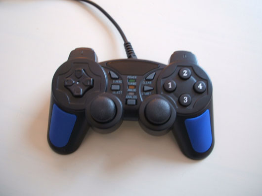
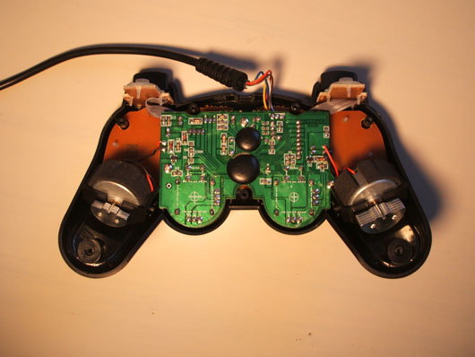
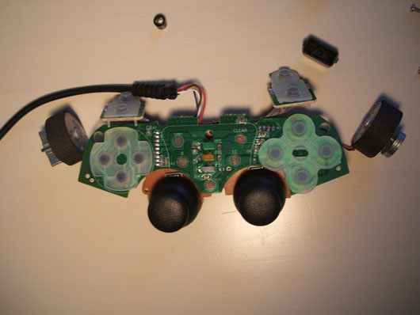
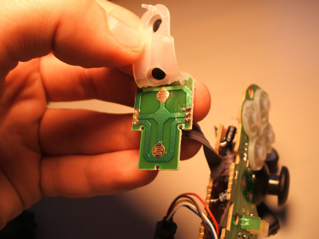
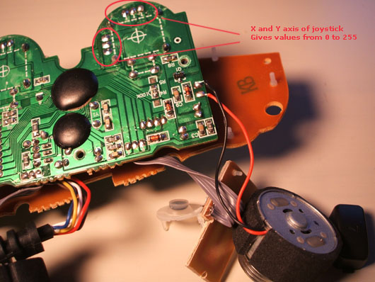
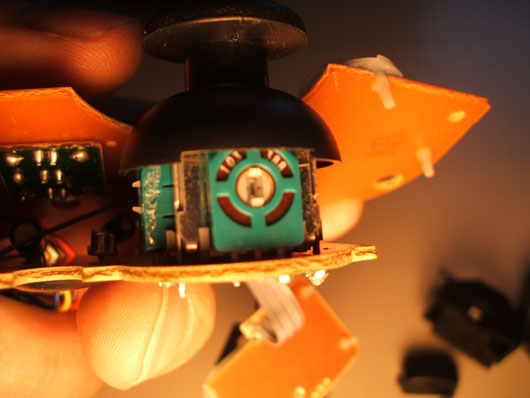
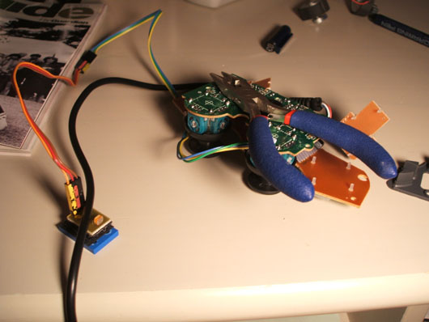

Sensor Interface for Computers
In our ixi
workshops we have used all kinds of sensors and interfaces to interface
with software
that the participants make in SuperCollider, Pure Data, ChucK or Max/MSP. There
are loads
of interesting digital interfaces available out there, but sometimes the simplest
thing (and
the cheapest) is just to buy a game controller, take it apart and plug a sensor
into it.
There are HID (Human Interface Device - a Subprotocol of the USB protocol)
objects/externals/
classes in most programming languages for audio.
Here are some common:
SuperCollider : HIDDeviceService (you can also use our XixiHID
in the code backyard)
Pure Data: [hid]
ChucK: HidIn, HidMsg
Max/MSP: [hi]
Python: Use Pygame Joystick classes
Java: JInput or JXInput
Processing: ProCONTROLL
One can plug any sensor that outputs 0-5 Volts into the joystick plugs of the
gamepad
(usually 2 joysticks in 2 or 3 dimensions) giving us at least 4 analog (0-255
resolution)
inputs.
Then one can use the buttons (12 or more) for digital control (digital is either on or off).

Figure 1: A simple joystick for 7 UK pounds.

Figure 2: When we take the back cover off, this is what we see.

Figure 3: Take all the cover of and we see the buttons, the joysticks, and two motors.

Figure 4: The digital buttons (on/off).

Figure 5: Here we see the analog joystick where we can solder a 5 Volt sensor.

Figure 6: The joystick itself.

Figure 7: A light sensor stuck onto the joystick outlets.
Enjoy and please let us know if this was useful or if you have any comments.
Musical sensor interfaces for computers. Physical interfaces.
Open source objects, interfaces.
NIME, New Interfaces for Musical Expression. Sensor data to music. Mapping.